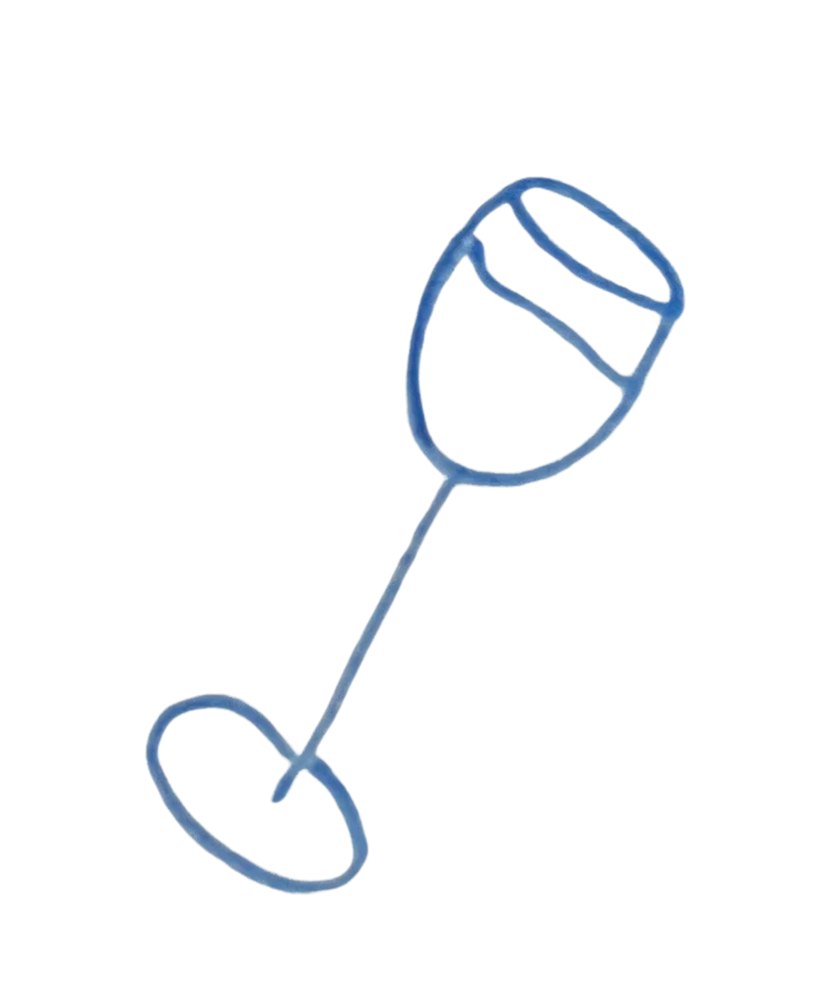

ALTERNATIVE DRIKKEVARER
Mine top 5:
- Blanc 0,0% fra Kronenbourg 1664
- Tuborg twist m. grapefrugt fra Turborg 0,0%
- RumISH alkoholfri Caribbean spiced fra ISH 0,5%
- Mojito 0,5% fra ISH
- Sodanvand (I et fancy glas med lidt citron for at føle sig fancy)
Testvindere:
